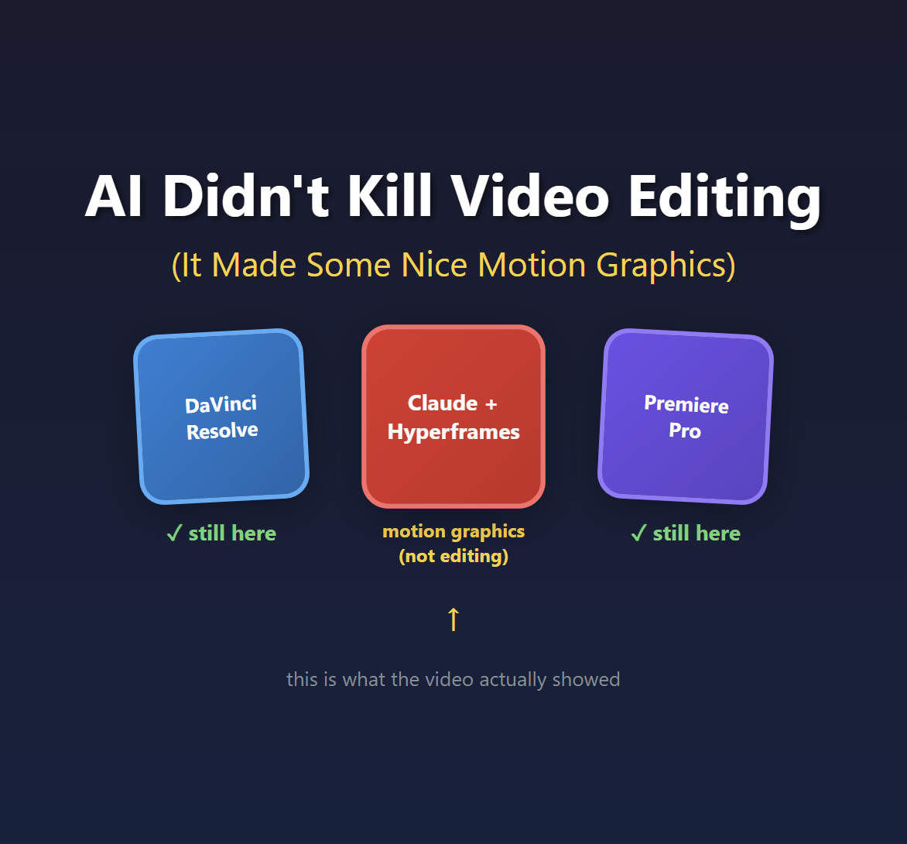

AI Didn't Kill Video Editing (It Made Some Nice Motion Graphics)

A video called "Claude Just Destroyed Every Video Editing Tool" has been making the rounds this week. The demo is genuinely impressive. Text animating on screen, motion graphics synced to speech, lower thirds appearing at the right moments. All generated by Claude and rendered through a tool called Hyperframes.
But here's the thing: what he showed isn't video editing.
It's motion graphics. And that distinction matters more than you might think.
Editing vs. Motion Graphics: Why It Matters
Video editing is the craft of selecting and arranging footage. It's choosing which take to use. It's deciding when to cut from Camera A to Camera B. It's pacing a 45-minute interview down to 8 minutes of compelling content. It's knowing when a speaker's gesture creates the perfect moment to hide a jump cut.
Motion graphics is adding visual elements on top of footage. Text overlays, animated lower thirds, charts, transitions. It's After Effects work, not Premiere work.
Both are valuable skills. Both take time. But they're fundamentally different jobs.
The video's title claims Claude "destroyed every video editing tool." What the video actually demonstrates is Claude generating animated HTML that gets rendered to video. That's impressive! But if you edit video yourself, or manage a team that does, this isn't replacing that work. It's replacing motion graphics work. Maybe.
The Audio Secret Nobody's Talking About
Here's what caught my attention. Around the 6-minute mark, the creator explains a limitation:
"It can't actually read or listen to or understand what's being said in the video... you would have to basically feed in like the transcript of it so that it could actually understand what's being said and where."
This is the quiet part that nobody wants to say out loud: AI isn't analyzing your video. It's analyzing your audio transcript.
And there's a very good reason for that. Let me show you the math.
A 30-minute video at 30fps contains 54,000 frames. Even sampling at just every 5th frame, that's 10,800 images. GPT-4 Vision charges roughly $0.01-0.03 per image for analysis. So analyzing a 30-minute video costs $108-324 at minimum. If you want frame-by-frame analysis for precise timing? You're looking at $540-1,620.
Now compare that to audio:
- 30 minutes of audio transcription via Whisper: ~$0.36
- Text analysis of the transcript: ~$0.10
- Total: under $1
That's a 200x+ cost difference. And that's being conservative.
This is why every "AI editing" tool you've heard of, whether it's Opus, Descript, or SlateAI, is actually analyzing your audio. The economics of vision analysis don't work yet.
The Token Problem Doesn't Scale
The creator is refreshingly honest about costs. At the 31-minute mark, he checks his usage: 10% of his $200/month Claude plan, burned on a single 37-second video.
What happens when you need to produce a 5-minute video? A 15-minute tutorial? A 45-minute interview edit?
The math gets brutal fast. And that's before you factor in the iteration cycles. He mentions rendering "probably over 60 videos in the past day just playing around with different methods." Each revision burns more tokens. Each experiment costs money.
I wrote about this problem with AI video generation tools earlier this year. The token economics create a psychological pressure that's the opposite of creative freedom. You become conservative because every failed attempt costs real money. That's not how creative work is supposed to feel.
When I posted about this on LinkedIn, several people pointed to an alternative: run open source models locally. Tools like Wan 2.1 or LTX Desktop on your own GPU, or renting time on Vast.AI. No tokens, no per-generation meter. I haven't tried this workflow myself yet, but the premise is appealing: you're paying for compute time, not punished per failed experiment.
What's Still Missing
Here's my wishlist for actual AI-assisted video editing. None of these exist yet:
- Intelligent rough cuts from multiple camera angles - Look at three camera feeds and pick the best angle for each moment
- Take selection - Watch five takes of the same line and choose the best performance
- B-roll timing - Detect when a speaker's gesture creates a natural cut point
- Visual quality analysis - Flag frames that are out of focus, poorly lit, or have the speaker blinking
- Pacing suggestions - Identify sections that drag and could be tightened
These are the decisions human editors make constantly. They require actually understanding what's happening in the video frames, not just reading a transcript. And right now, the cost math doesn't support it.
Credit Where It's Due
I don't want to be entirely negative here. What the video demonstrates is legitimately useful.
If you need animated text overlays, lower thirds, or motion graphics for social content, this workflow could save real time. The Hyperframes tool looks genuinely interesting. Being able to describe what you want in natural language and get rendered motion graphics is valuable.
But call it what it is. It's AI-assisted motion graphics generation. It's a tool for the After Effects part of your workflow, not the Premiere part.
The title "Claude Just Destroyed Every Video Editing Tool" is doing a lot of heavy lifting that the actual demo doesn't support.
When Will This Actually Change?
The good news: vision model costs are dropping fast. What cost $0.03 per image last year costs $0.01 now. Give it another year or two and we might hit $0.001 per image.
At that point, analyzing every frame of a 30-minute video costs $54 instead of $540-1,620. Still not cheap, but suddenly viable for professional workflows.
That's when we might see actual AI video editing. Genuine visual understanding of footage, not just motion graphics driven by transcripts.
In the meantime, if you want to experiment with AI in your creative workflow, IDEs and terminals are the fastest way to play around. I wrote about how I use Copilot CLI and VS Code for exactly this kind of thing. Once you're comfortable prompting AI agents directly, you can build your own workflows and test what actually works for your use cases.
Until then, "AI video editing" really means "AI audio analysis with some animated HTML on top."
And honestly? For motion graphics work, that might be enough. Just don't pretend it's replacing the editing craft.